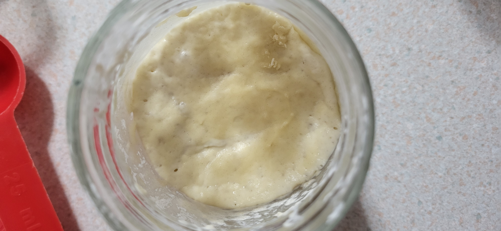
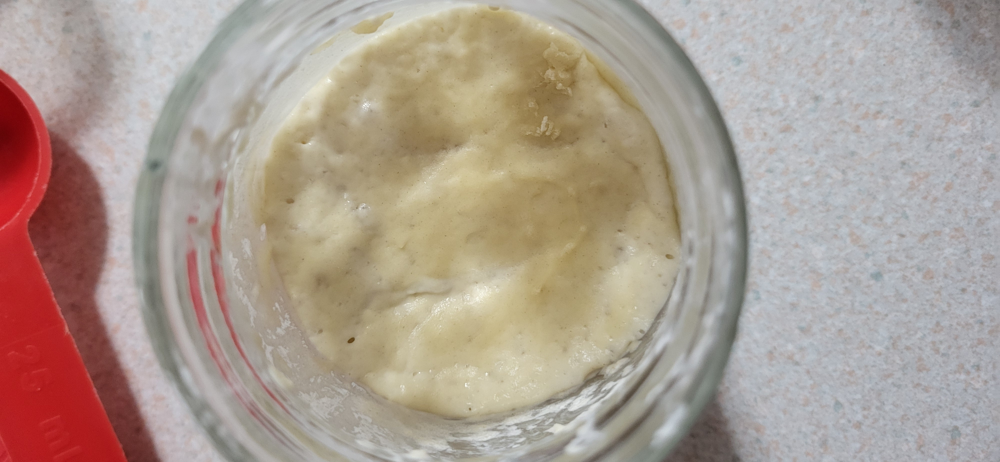

RTA933 Journal
Entry #1 (2025-05-06)
In Time/Traveller: Bacteria Bruxa, author Shaina Agbayani strings together a short, reflective commentary on fermentation by drawing on her own cultural identity. Agbayani explores fermentation as more than just a culinary practice, painting it as a spiritual and cultural ritual allowing for a connection with one's land and ancestors. Agbayani's narrative highlights the fermentation process as a microcosm of society: drawing comparisons between the commercialization of probiotics and the processes of colonialism. She suggests fermentation as a small way to disengage from the machine of capitalism, heal, and reconnect with one's traditions and culture.
"I am reminded here of the power of community in creating immunity and protection when we come together with intention, integrity, patience and ritual to honour place-based relationships."
This particular quote sticks out to me, as a long-term resident of a town struggling to keep its own identity and sense of place. Agbayani is referring to the bacteria within sourdough, and it's ability to become self-sustaining and insular against outside threats. Continuing with the piece's overarching theme of bacterial cultures as a miniature mirror of human society, I draw a comparison here to real-world community spirit and the age-old idea of "it takes a village to raise a child". My own hometown has grown subtantially over my lifetime, and I've witnessed a decline of community engagement as the population bloomed and demographics shifted. Traditions are dying out, and people are growing distant from one another. This quote, and the article as a whole, serve as a reminder that there's more to a village than just a bunch of people in one area: communities need to be guided and nurtured in order to foster a sense of place and belonging. All in all, it's not too different from dumping a bunch of flour in a jar to create sourdough: without care and nurturing, it will never grow.
Entry #2 (2025-05-08)
Note: click an image to enlarge it.
May 8 - Day 1:
After surviving the train ride home, the starter had a night to rest.
May 9 - Day 2:
Starter #1 displayed some bubbles, but had not risen very much. It's consistency was thick, and I suspect it didn't recieve enough water the previous day. After splitting and feeding it, I turned the discard into a second starter and fed that one as well.
This day's image is of the starter after being fed and stirred.
May 10 - Day 3:
This day's image is of the starter after being fed and stirred.
Both starters rose significantly overnight, to about double their volume. Neither displayed many bubbles on the surface, but when stirred they had very light and airy insides. In terms of colour, both had a darker crust on the top, but were much brighter inside. After feeding starters #1 & #2, both were split off into new starters, leaving me with 4.
Image 1: Starter #1 pre-feeding
Image 2: Starter #1 post-feeding 
May 11 - Day 4:
Image 1: Starter #1 pre-feeding
Image 2: Starter #1 post-feeding 
After a warm night above the fireplace, the 4 starters rose massively, tripling their volume. Lots of bubbles were visible in the jars, and they were incredibly thick and hard to stir. Once again, the discard from the 4 starters became another 4, leaving me with 8.
Image 1: The 4 starters first thing in the morning
Image 2: The 8 starters after feeding.

May 12 - Day 5:
Image 1: The 4 starters first thing in the morning
Image 2: The 8 starters after feeding.
Not much activity was observed overnight. The starters didn't rise much, and most were a bit more runny than usual. I have run out of jars at this point, so I can only afford to split off 2 new ones. Those that get split off are fed and watered, while the rest get a good stir. Caring for 10 starters is getting time-consuming.
Image 1: Starter #1 after feeding and splitting.
Image 2: 10 starters, tucked in to bed.
May 13 - Day 6:
Image 1: Starter #1 after feeding and splitting.
Image 2: 10 starters, tucked in to bed.
Again, the starters failed to rise much overnight. Starter #1 and some of the others showed a fair bit of bubbling, and most were quite runny.
Most starters got a good stir, while Starter #1 and 2 others were fed and watered.
Image 1: Starter #1 showing many bubbles.
May 14 - Day 7:
Image 1: Starter #1 showing many bubbles.
The original starter rose a fair bit, with a lot of bubbles. It was the runniest it's been yet, and many of the other starters had some interesting results.
Image 1: Starter #1 showing many bubbles.
Image 2: Starter #1 having risen a fair bit.
Image 3: Scum on the surface of starter #3.
Image 4: Bubbly surface of starter #2.
Image 5: Scum on the surface of starter #8.
Image 1: Starter #1 showing many bubbles.
Image 2: Starter #1 having risen a fair bit.
Image 3: Scum on the surface of starter #3.
Image 4: Bubbly surface of starter #2.
Image 5: Scum on the surface of starter #8.
Entry #4 (2025-05-26)
My chosen recipe was a simple Sourdough Muffin recipe. I did deviate slightly from the listed steps, using the following ingredients:
The baking process was simple, taking roughly half an hour to complete a batch. I began by measuring out the dry ingredients, and adding them into a bowl. The cinnamon was added at this stage in the second batch. Once all of the ingredients were added in, I stirred them up to mix them together. Following this, I cracked the egg into the bowl and measured the rest of the wet ingredients, adding the sourdough last. After stirring the batter until it reached a uniform appearance, I divided it up into muffin cups. The recipe suggested they would take around 5 minutes to bake at 350F, but they really needed about 20 minutes. The end result was quite tasty, and I decided to add the cinnamon and brown sugar to the second batch to make them a bit more interesting.
- 180g of flour
- 130g of sugar
- 10g of baking powder
- 1 egg
- 1 teaspoon of vanilla extract
- 120mL of olive oil
- 80mL of milk
- 0.5 cups of sourdough starter (roughly the contents of 1 jar)
- 1/2 teaspoon of cinnamon
- A sprinkle of brown sugar atop each muffin
The baking process was simple, taking roughly half an hour to complete a batch. I began by measuring out the dry ingredients, and adding them into a bowl. The cinnamon was added at this stage in the second batch. Once all of the ingredients were added in, I stirred them up to mix them together. Following this, I cracked the egg into the bowl and measured the rest of the wet ingredients, adding the sourdough last. After stirring the batter until it reached a uniform appearance, I divided it up into muffin cups. The recipe suggested they would take around 5 minutes to bake at 350F, but they really needed about 20 minutes. The end result was quite tasty, and I decided to add the cinnamon and brown sugar to the second batch to make them a bit more interesting.
Image 1: The ingredients used in the first batch of muffins. (Hamburger buns and bananas not included.)
Image 2: A starter, shortly before being added into the mix.
Image 3: The dry ingredients all mixed together.
Image 4: The wet ingredients added into the bowl, and the sourdough starter in the measuring cup.
Image 5: The completed muffin mix.
Image 3: The dry ingredients all mixed together.
Image 4: The wet ingredients added into the bowl, and the sourdough starter in the measuring cup.
Image 5: The completed muffin mix.
Image 6: The second batch of muffins, with cinnamon and brown sugar.
Image 7: The second batch, fresh out of the oven.
Image 8: Cross-section of a hot and fresh muffin.
The process of creating and nurturing the sourdough starter embodies the idea of productive friction. It is a two-headed process, driven by human intention and microbial autonomy that challenges one's understanding of care. The relationship between self and sourdough demands attention, patience, and a steady guiding hand. Feeding the starter is more than just routine maintenance: it is a response to the systems and cycles of the microbial life within, an act that balances the current needs of the bacterial colony with the human's future goal of making bread or some other product to eat. The resulting product (muffins, in this case) represent this cross-species relationship, and the care required to bring the starter through it's life to it's eventual consumption is more than just domination and control, but rather an ongoing balancing act, cooperating with and responding to the starter's needs.
Throughout this process of creating and caring for my ten starters, I've become fairly attuned to their needs and the way in which they communicate them. For example, I can tell at a glance when I pop one's lid whether it's thirsty, or perhaps got a bit over-watered the last night. As someone notorious for diving into things without measuring or reading instructions, I feel I have good instincts on what needs to be done, or what will work in a given situation (pardon my ego). The other day at work I decided to begin working on creating a new enclosure for our 3D printers. The old enclosure was very shoddy, it consisted of acrylic panels taped to bookends, and fell over quite easily. I decided to print some new brackets into which the panels would slot, and screws would hold everything together. I never measured the radius of the screw holes of the bracket, and was able to scrounge around in my basement for screws I knew would fit, even without a bracket on-hand to test. When it came time to screw everything together, I didn't have a drill at my disposal, but I figured I could use our soldering iron to melt a hole in the panels. Turns out, the soldering iron's diameter matched that of the screws and holes (nearly enough), and the whole piece came together perfectly without even a hint of prior planning, and the only side effect were the toxic fumes I inhaled and the stench that lingered for the rest of the day. In my work with 3D printers, I've become very attuned to various audio cues that tell me the status of the print job without being in visual range of the printer. I can hear an impending filament jam, for example, and many a time I have dashed out of my office to pause a print before the jam becomes a problem. These same instincts are what allowed me to effectively care for my starters and prepare the muffins, but only after enough experience working with them.
"Contamination", as a word, carries a negative connotation to most people. Anna Tsing's article pushes that aside, and explores contamination as an encounter; a form of collaboration between species. Of course, "contamination" isn't always a good thing, but it is a matter of perception. We worked hard to prevent our sourdough starters from being contaminated by mold, but this is because, from our human viewpoint, a moldy starter is useless to our purpose of baking something. From the viewpoint of the theoretical mold, that same contamination process is vital for it's survival and growth. Whether contamination is "good" or "bad" depends on the situation and the party involved. I would hate to see my starters go moldy, but I'm sure the mold would love it. There are situations in which contamination can be mutually beneficial, but from our human standing we typically see it as a nuisance to be avoided. Thinking about contaimination from the viewpoints of the involved elements can encourage a deeper understanding of how species interact with each other, and those concepts can apply to our own human society, and the exchange of people and traditions from various cultures.
Image 7: The second batch, fresh out of the oven.
Image 8: Cross-section of a hot and fresh muffin.